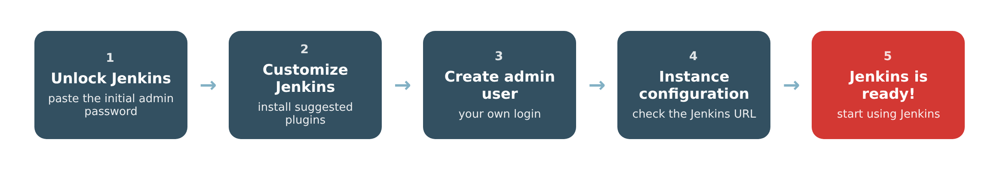
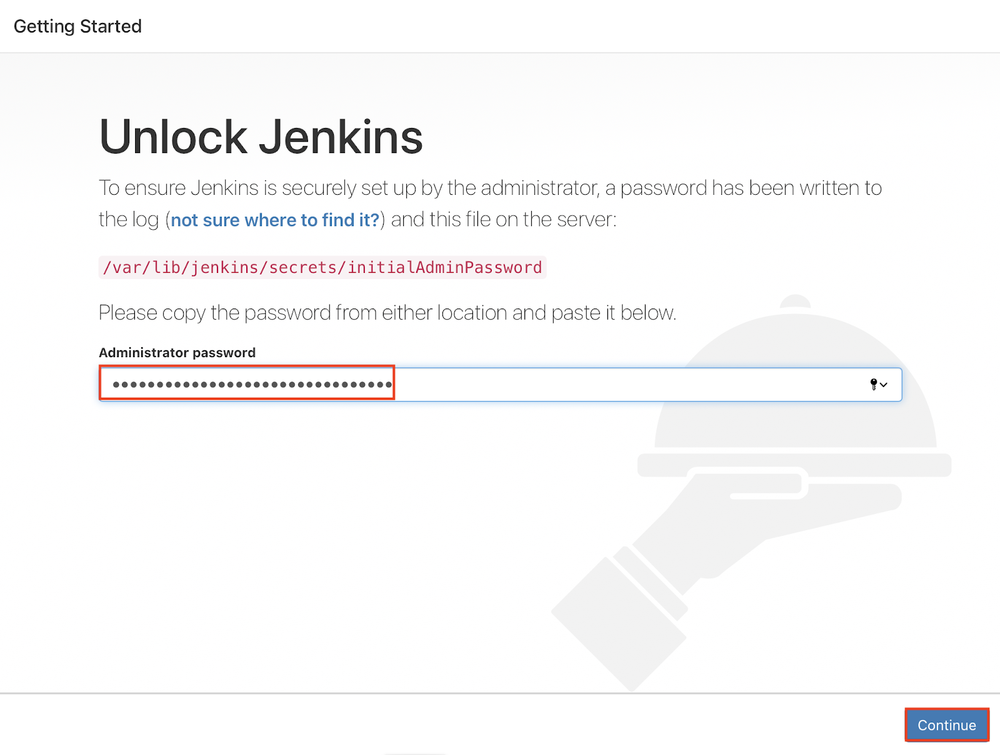
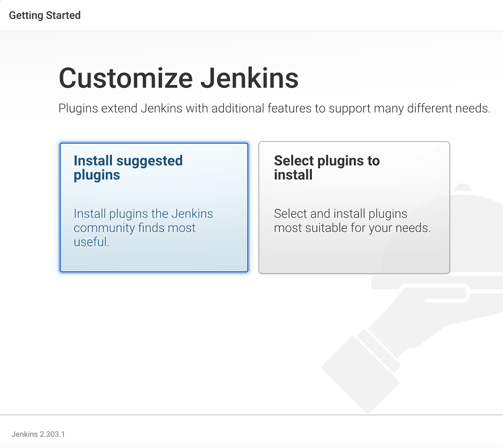
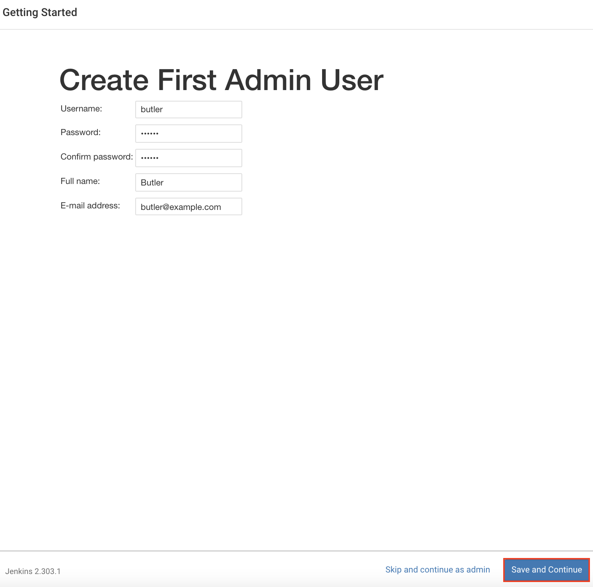
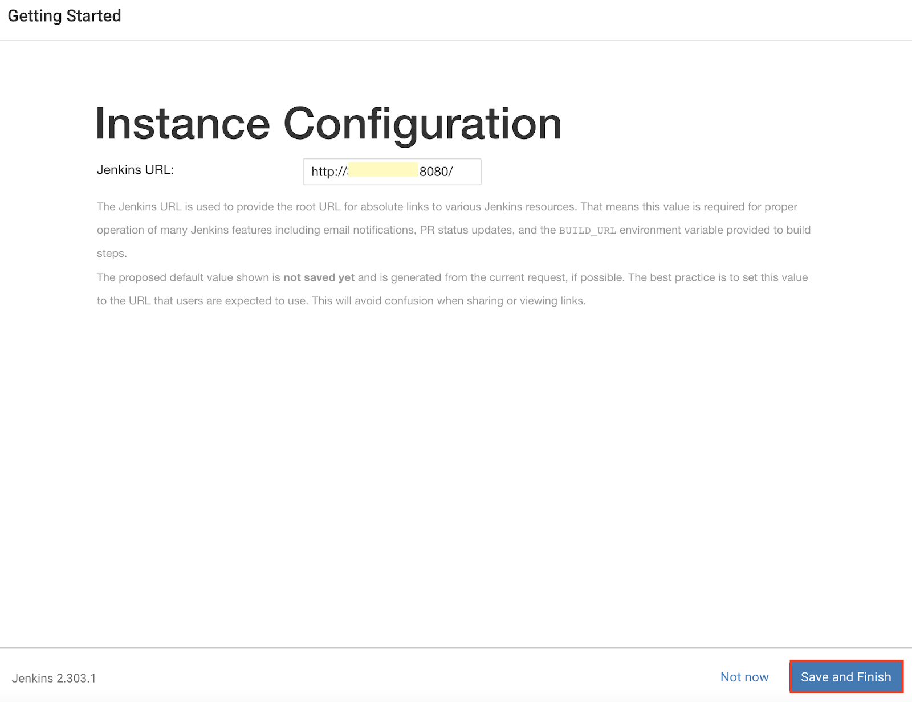
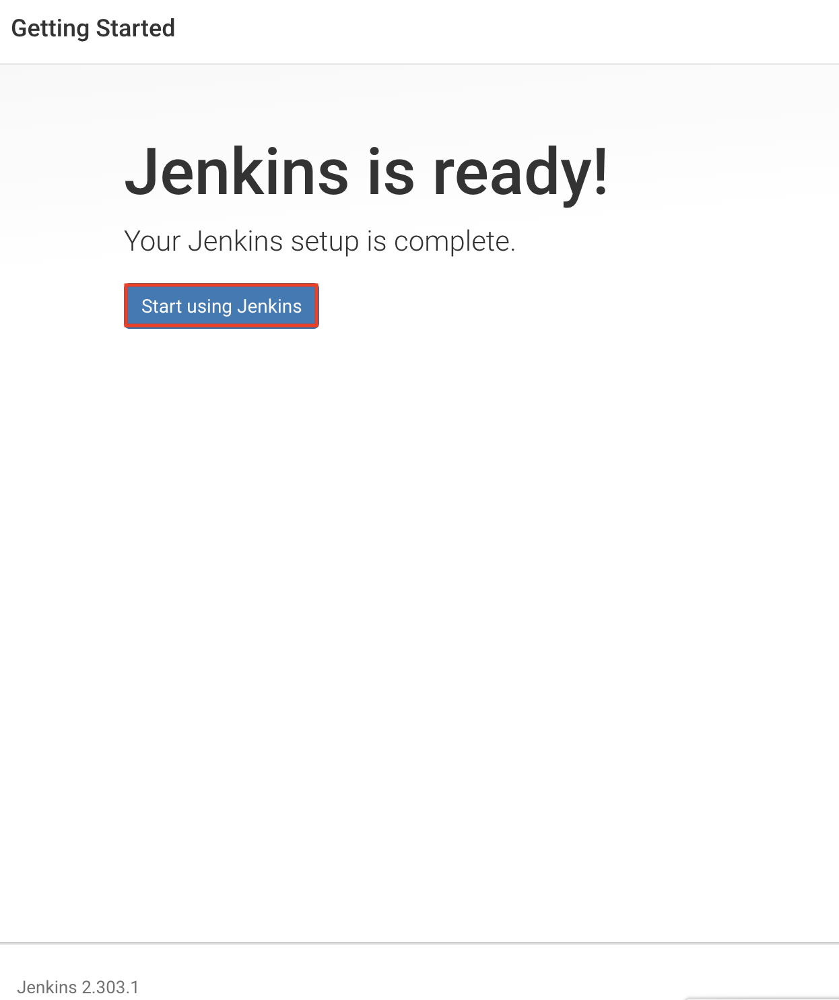

3. Setup Wizard
The first time you open a new Jenkins, a setup wizard starts. It takes you through five screens: unlock Jenkins, install plugins, create the first administrator, check the URL, and start using Jenkins.

Step 1: Unlock Jenkins
Jenkins asks for the automatically generated initial admin password. Paste it into the Administrator password field and click Continue.
Where to find it, depending on how you installed Jenkins:
- Docker:
docker exec jenkins-local cat /var/jenkins_home/secrets/initialAdminPassword - Linux package:
sudo cat /var/lib/jenkins/secrets/initialAdminPassword - WAR file: printed in the terminal, and in
~/.jenkins/secrets/initialAdminPassword

Step 2: Customize Jenkins
Choose how to install plugins:
- Install suggested plugins (recommended): installs the set of plugins the community uses most. Choose this option.
- Select plugins to install: you choose the plugins yourself.
The installation takes a few minutes. If some plugins fail, click Retry.

Step 3: Create the first admin user
Fill in the username, password, full name and email address of your administrator account, then click Save and Continue. Choose a password you will remember: this is the account you will use for the rest of the module.

Step 4: Instance configuration
Check that the Jenkins URL is correct. In this lab, keep http://localhost:8080/. Click Save and Finish.

Step 5: Jenkins is ready!
Click Start using Jenkins. Your Jenkins home page is available at http://<your IP address or localhost>:<port>, for example http://localhost:8080.
